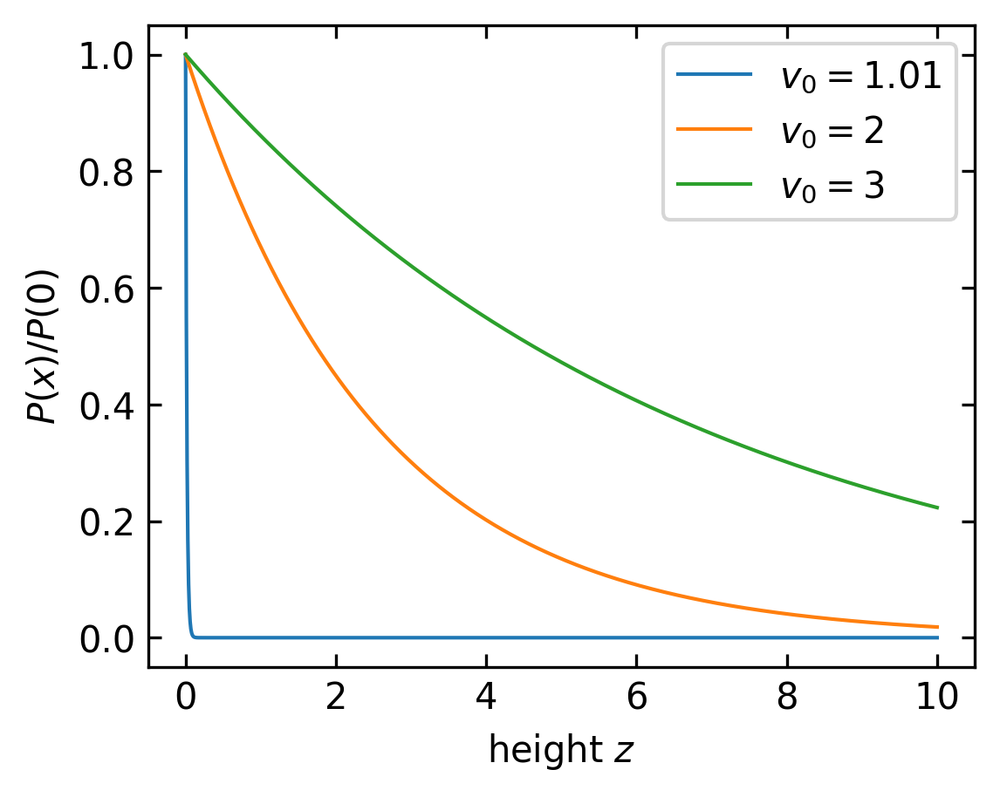
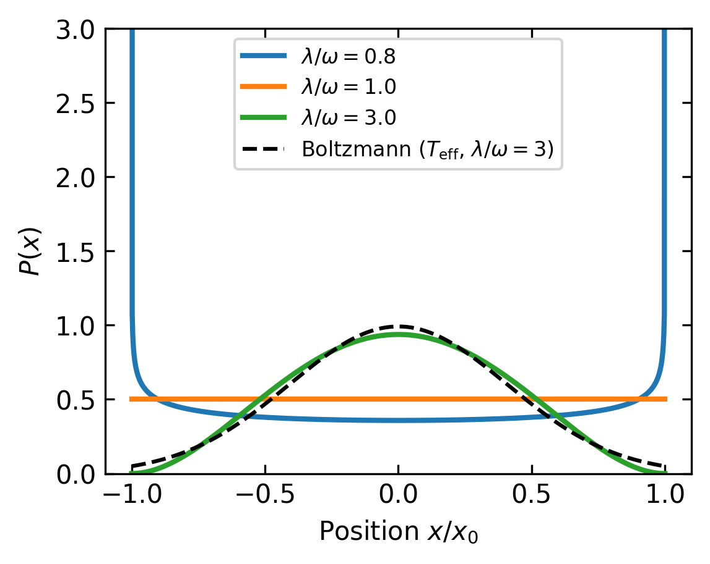
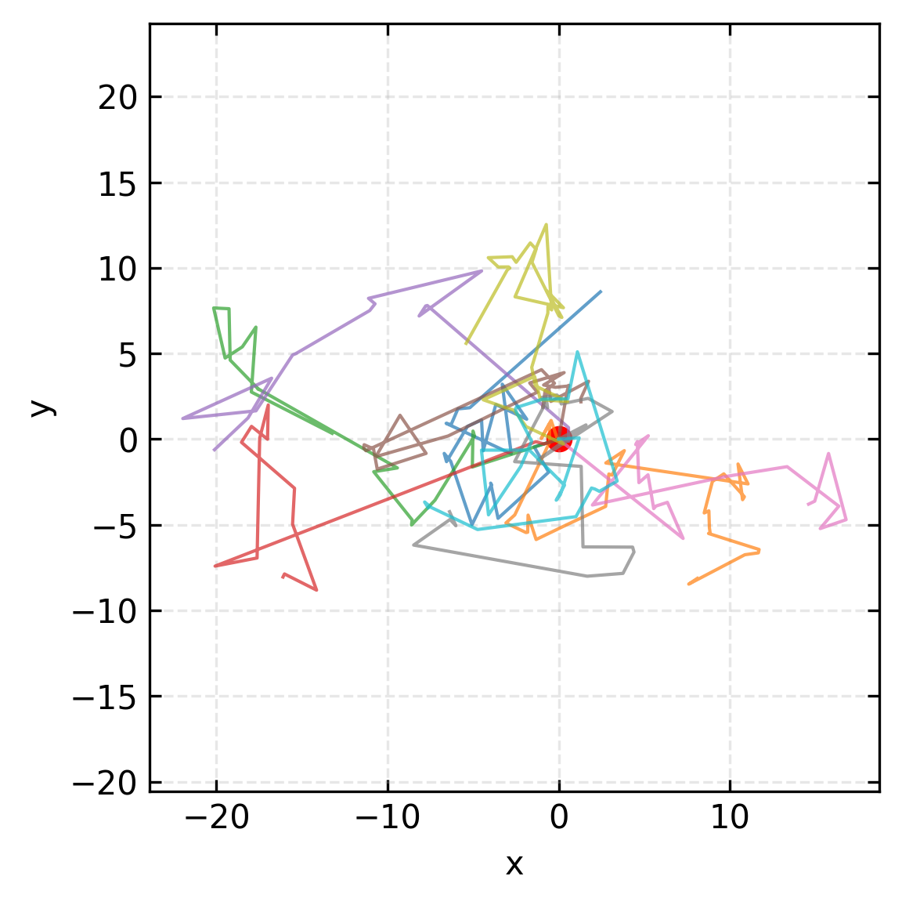
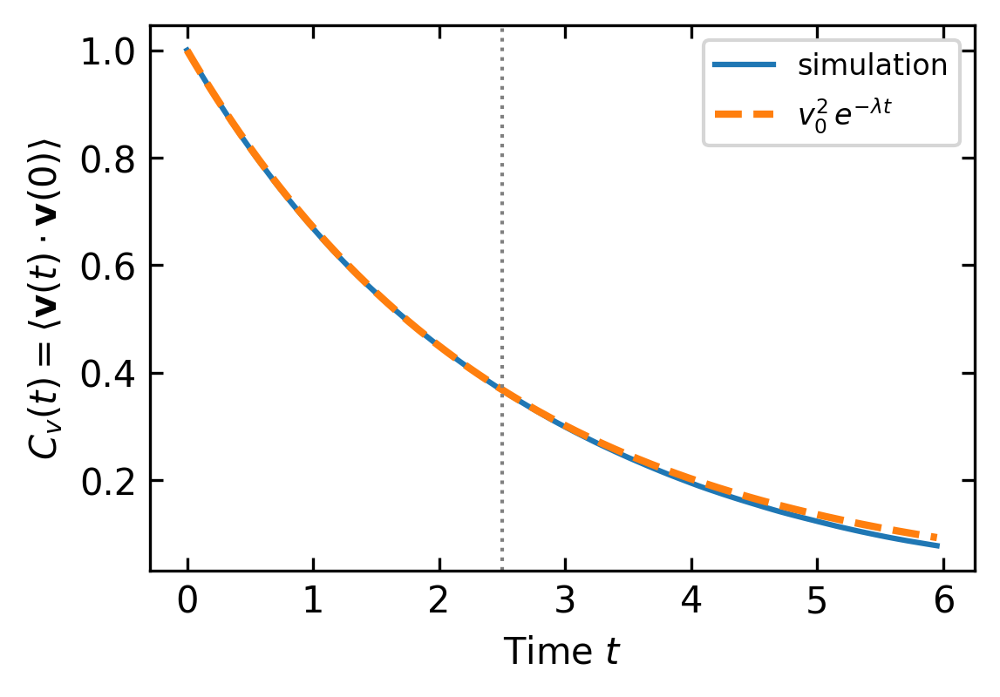
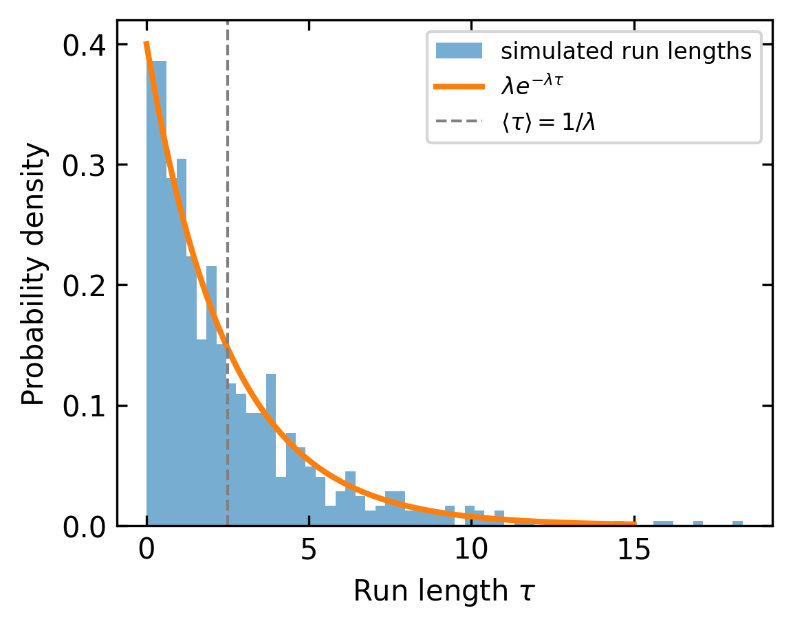
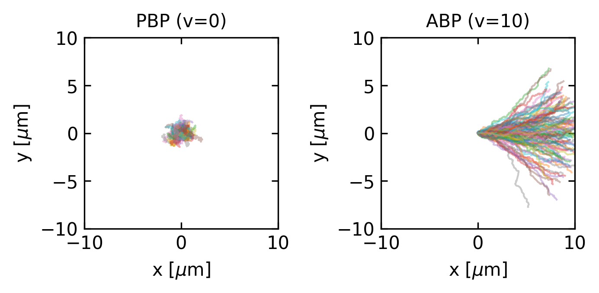
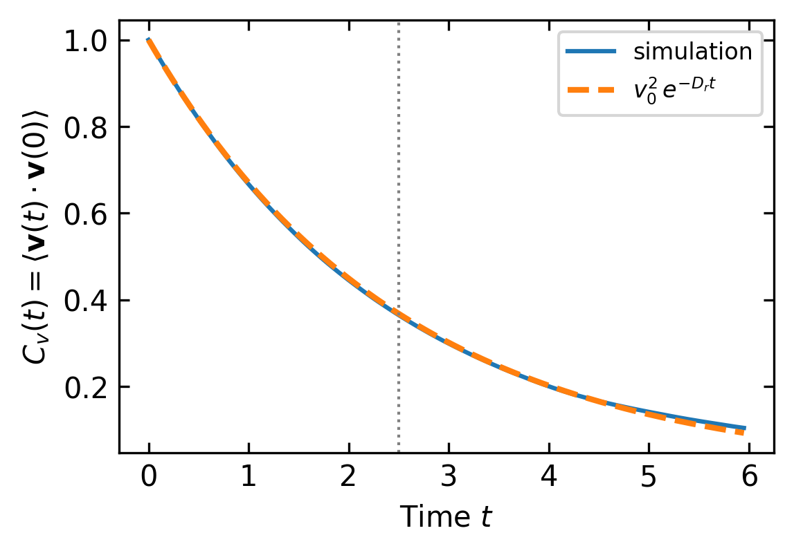
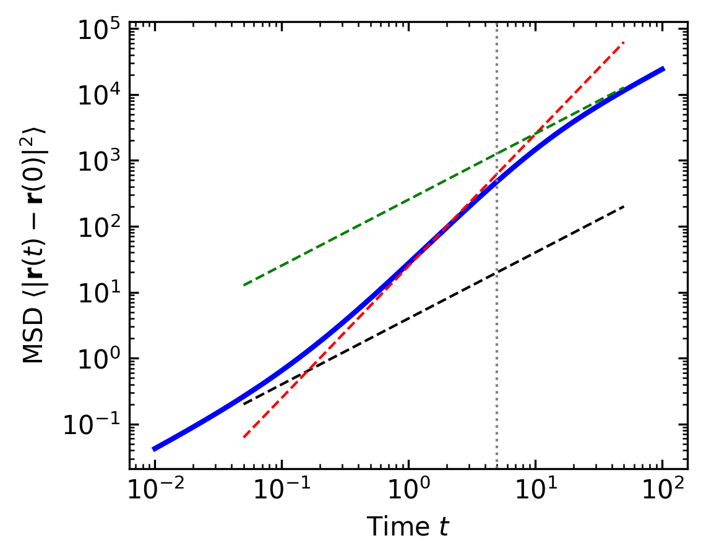

Microscopic Models of Self-propulsion
Introduction: From Equilibrium Violations to Microscopic Models
In the previous lecture, we explored the fundamental concepts of equilibrium statistical mechanics and how active biological systems violate these principles. We examined detailed balance and the fluctuation-dissipation theorem (FDT), discovering that active systems consistently break these equilibrium constraints.
One of the key examples we studied was sedimentation, where colloidal particles in thermal equilibrium form an exponential density profile according to the Boltzmann distribution:
\[n(h) = n_0 e^{-\frac{mgh}{k_B T}}\]
This distribution arises directly from equilibrium statistical mechanics and represents a balance between gravitational forces and thermal fluctuations.
But what happens when particles are active - consuming energy to propel themselves? This lecture begins by exploring one of the simplest active matter models: the run-and-tumble particle (RTP). We’ll first examine this model in 1D with sedimentation to directly contrast with our equilibrium example from lecture 2, demonstrating how active particles violate equilibrium principles even in this simplified scenario.
From there, we’ll extend to more sophisticated microscopic models that can capture the essential features of self-propelled particles in three dimensions:
- Run-and-Tumble Particles (RTPs) - inspired by bacterial motion patterns like E. coli
- Active Brownian Particles (ABPs) - which combine random diffusion with persistent self-propulsion
- Swimming at Low Reynolds Number - examining the physics that governs locomotion at the microscale
- Hydrodynamic Interactions - understanding how active particles influence their surroundings and each other
- Microswimmer Force Dipoles - characterizing the flow fields generated by different types of swimmers
These models will provide us with the tools to analyze collective behaviors, pattern formation, and non-equilibrium dynamics in active biological systems.
Run-and-Tumble Particles (RTPs)
Run-and-tumble dynamics represent an important class of active motion, inspired by the swimming behavior of bacteria like E. coli. Unlike passive Brownian motion, run-and-tumble particles alternate between straight-line “runs” and random reorientation “tumbles.”
This run-and-tumble motion, which comes in different flavors (e.g. a run-and revserse motion as displayed in the movie above) has even some functionality. It allows bacteria to move in gradients of chemical species concentrations without measuring even the gradient directly.
1D Run-and-Tumble with Sedimentation
We can make a simple model for this run-and-tumble motion in one dimension. Let’s start with the master equations for the probabilities \(P_+(x,t)\) and \(P_-(x,t)\) of finding a particle at position \(x\) moving in the positive or negative direction, respectively. In the simplest case without gravity or diffusion:
\[\frac{\partial P_+}{\partial t} = -\frac{\partial}{\partial x}(v_0(x)P_+) - \lambda P_+ + \lambda P_-\]
\[\frac{\partial P_-}{\partial t} = \frac{\partial}{\partial x}(v_0(x)P_-) + \lambda P_+ - \lambda P_-\]
These equations describe how probabilities change due to advection at position-dependent speed \(v_0(x)\) and flipping of the swimming direction with rate \(\lambda\).
We can rewrite these equations in terms of the total probability density \(P(x,t) = P_+(x,t) + P_-(x,t)\) and the polarization \(\sigma(x,t) = P_+(x,t) - P_-(x,t)\). After adding and subtracting the equations:
\[\frac{\partial P}{\partial t} = -\frac{\partial}{\partial x}(v_0(x)\sigma)\]
\[\frac{\partial \sigma}{\partial t} = -\frac{\partial}{\partial x}(v_0(x)P) - 2\lambda \sigma\]
Note
From the first equation, we can identify the probability current as \(J(x,t) = v_0(x) \sigma(x,t)\). In the steady state, \(\frac{\partial \sigma}{\partial t} = 0\), which gives:
\[\frac{\partial}{\partial x}(v_0(x)P) = -2\lambda \sigma\]
\[v_0(x)\frac{\partial P}{\partial x} + P\frac{dv_0(x)}{dx} = -2\lambda \sigma\]
Solving for \(\sigma\):
\[\sigma(x) = -\frac{v_0(x)}{2\lambda}\frac{\partial P}{\partial x} - \frac{P}{2\lambda}\frac{dv_0(x)}{dx}\]
This then yields the current:
\[J(x) = v_0(x) \sigma(x) = -\frac{v_0^2(x)}{2\lambda}\frac{\partial P}{\partial x} - \frac{v_0(x)P}{2\lambda}\frac{dv_0(x)}{dx}\]
This has the form of a drift-diffusion current \(J = -D_{\text{eff}}\frac{\partial P}{\partial x} + V_{\text{eff}}P\) with a position-dependent effective diffusion coefficient \(D_{\text{eff}}(x) = \frac{v_0^2(x)}{2\lambda}\) and an effective drift velocity \(V_{\text{eff}}(x) = -\frac{v_0(x)}{2\lambda}\frac{dv_0(x)}{dx}\).
Density Distributions in Different Regimes
One can find out now the steady state distribution of run-and-tumble swimmers for different cases. Two interesting ones are:
- Position-dependent tumble rate, constant speed: When the speed \(v_0\) is constant but the tumble rate \(\lambda(x)\) varies with position, the steady-state current is:
\[J(x) = -\frac{v_0^2}{2\lambda(x)}\frac{\partial P}{\partial x}\]
Setting J(x) = 0 for the steady state yields:
\[\frac{\partial P}{\partial x} = 0\]
This gives a uniform density distribution:
\[P(x) = \text{constant}\]
Interestingly, spatial variation in tumble rate alone (\(\lambda(x)\)) cannot create population gradients when the swimming speed is constant. Real bacterial chemotaxis escapes this constraint because the tumble rate depends not just on position but also on the bacterium’s orientation relative to the chemical gradient – \(\lambda(\mathbf{r}, \mathbf{n}) = \lambda_0(1 - \mathbf{n} \cdot \nabla c(\mathbf{r})/|\nabla c(\mathbf{r})|)\) – breaking the symmetry between forward and backward runs. We return to chemotaxis in a later lecture, where we will see how temporal memory in the E. coli signaling cascade allows gradient sensing despite this uniform-density result. (see for example 1)
- Position-dependent speed, constant tumble rate: When the swimming speed depends on position \(v_0(x)\) while the tumble rate \(\lambda\) remains constant, we can find the steady-state density distribution by setting \(J(x) = 0\) (no flux condition) and solving:
\[-\frac{v_0^2(x)}{2\lambda}\frac{\partial P}{\partial x} - \frac{v_0(x)P}{2\lambda}\frac{dv_0(x)}{dx} = 0\]
This simplifies to:
\[\frac{\partial P}{\partial x} = -\frac{1}{v_0(x)}\frac{dv_0(x)}{dx}P\]
This is a separable first-order ODE. Separating variables:
\[\frac{dP}{P} = -\frac{1}{v_0(x)}\frac{dv_0(x)}{dx}\,dx = -\frac{dv_0}{v_0}\]
where we recognised that \((1/v_0)\,dv_0/dx\,\,dx = dv_0/v_0 = d(\ln v_0)\). Integrating both sides:
\[\ln P = -\ln v_0(x) + \text{const}\]
which, after exponentiating, gives the steady-state density distribution:
\[P(x) \propto \frac{1}{v_0(x)}\]
This reveals that bacteria naturally accumulate in regions of lower swimming speed. Looking at the effective drift velocity \(V_{\text{eff}}(x) = -\frac{v_0(x)}{2\lambda}\frac{dv_0(x)}{dx} = -\frac{1}{4\lambda}\frac{d(v_0^2(x))}{dx}\), we see bacteria will move toward regions where swimming speed decreases. This provides a mechanism for chemotaxis without directly modulating the tumbling rate. In fact this overwrites the detailed balance equation we obtained earlier for equilibrium.
Sedimentation of Run-and-tumeble particles
With a little bit of effort, one can modify this simple model to include an additional sedimentation drift velocity which is given by \(mg/\gamma\), where \(\gamma\) is the friction coefficient. Including further thermal diffusion yields:
\[\frac{\partial P_+}{\partial t} = -\frac{\partial}{\partial x}\left[(v_0(x)-\frac{mg}{\gamma})P_+\right] - \lambda P_+ + \lambda P_- + D\frac{\partial^2 P_+}{\partial x^2}\]
\[\frac{\partial P_-}{\partial t} = -\frac{\partial}{\partial x}\left[(-v_0(x)-\frac{mg}{\gamma})P_-\right] + \lambda P_+ - \lambda P_- + D\frac{\partial^2 P_-}{\partial x^2}\]
In the steady state, when thermal diffusion is small (\(D \approx 0\)), we obtain:
\[P(x) = P_+(x) + P_-(x) \propto e^{-\frac{x}{\delta}}\]
where \(\delta\) is the sedimentation length
\[\delta = \frac{v_0^2-(mg/\gamma)^2}{2\lambda mg/\gamma}\]
This is strikingly different from the equilibrium result! When sedimentation speed and active particle speed are comparable the sedimentation length is zero. The bacteria would completely collapse to a layer on the surface.
If the speed is now bigger than the sedimentation speed, the sedimentation length becomes positive.
Since the sedimentation length in equilibrium is
\[\delta = \frac{k_B T}{mg}\]
it is tempting to say that
\[\frac{k_B T_\mathrm{eff}}{mg}=\frac{v_0^2-(mg/\gamma)^2}{2\lambda mg/\gamma}\]
which yields an effective temperature
\[T_\mathrm{eff} = \frac{v_0^2-(mg/\gamma)^2}{2\lambda k_B}\]
which is not the temperature of the surrounding medium. This effective temperature accounts for the active motion of the particle and its interaction with the surrounding medium.
RTP in a Harmonic Potential
Sedimentation showed that active particles can be assigned an effective temperature – the exponential density profile looks Boltzmann-like, just with \(T_\text{eff}\) replacing \(T\). A harmonic potential reveals exactly where this picture breaks down.
For a 1D RTP with speed \(\pm v_0\) and tumble rate \(\lambda\) in a harmonic potential \(U(x) = \frac{1}{2}kx^2\) (restoring force \(-kx\), mobility \(1/\gamma\)), the particle experiences a net force \(\mp kx/\gamma\) alongside its self-propulsion. The key length scale is the turning point
\[x_0 = \frac{v_0}{\omega}, \qquad \omega = \frac{k}{\gamma}\]
at which the harmonic restoring force exactly cancels the active drive. The particle cannot escape beyond \(|x| > x_0\), so the distribution is strictly confined to \([-x_0, x_0]\).
The exact steady-state distribution is:
\[P(x) \propto \left(x_0^2 - x^2\right)^{\lambda/\omega - 1}, \qquad |x| \leq x_0\]
The exponent \(\lambda/\omega - 1\) controls the shape entirely:
- \(\lambda > \omega\) (fast tumbling, weak activity): exponent positive, distribution peaks at centre – approaches Gaussian as \(\lambda/\omega \to \infty\)
- \(\lambda = \omega\): exponent zero, uniform distribution
- \(\lambda < \omega\) (slow tumbling, strong activity): exponent negative, distribution diverges at the edges – particles pile up near the turning points
Derivation
In steady state the probability currents for the \(\pm\) populations separately satisfy:
\[\frac{d}{dx}\left[(v_0 - \omega x)P_+\right] = -\lambda P_+ + \lambda P_-\] \[\frac{d}{dx}\left[(-v_0 - \omega x)P_-\right] = \lambda P_+ - \lambda P_-\]
By symmetry \(P_-(x) = P_+(-x)\), so \(P(x) = P_+(x) + P_-(-x)\) is symmetric. Adding the two equations and imposing zero net current at the boundaries gives a first-order ODE for \(P_+(x)\):
\[\frac{dP_+}{dx} = \frac{\lambda - \omega}{v_0 - \omega x} P_+\]
which integrates to \(P_+(x) \propto (x_0 - x)^{\lambda/\omega - 1}\). Combining with the symmetric \(P_-\) yields:
\[P(x) \propto (x_0^2 - x^2)^{\lambda/\omega - 1}\]
For an equilibrium Brownian particle in the same potential the distribution would be \(P^{\text{eq}}(x) \propto e^{-\beta k x^2/2}\) – a Gaussian. The RTP distribution has a completely different functional form and cannot be written as a Boltzmann factor at any temperature, demonstrating that active particles are not simply “hot” equilibrium particles.

The edge-peaked distribution for \(\lambda < \omega\) is a hallmark of strong activity – it has no equilibrium analogue and cannot be reproduced by any choice of effective temperature. This directly shows that the effective temperature introduced in the sedimentation section is at best an approximation valid in the weak-activity or fast-tumbling limit.
Mathematical Formulation in Higher Dimensions
Extending to higher dimensions, the equations of motion for a run-and-tumble particle can be written as:
\[\frac{d\mathbf{r}}{dt} = v_0 \mathbf{n}(t) - \frac{1}{\gamma}\nabla U(\mathbf{r}) + \boldsymbol{\xi}(t)/\gamma\]
where \(\mathbf{n}(t)\) represents the orientation vector that changes discontinuously according to a Poisson process. This stochastic process models tumbling events as memory-less, random occurrences with the fundamental property:
\[P(\text{tumble in interval } [t, t+dt]) = \lambda \, dt + o(dt)\]
where \(\lambda\) is the tumbling rate and \(o(dt)\) represents higher-order terms that become negligible for small \(dt\). This formulation has several important implications:
The probability of a tumble occurring in any small time interval \(dt\) is proportional to the length of that interval, with \(\lambda\) being the proportionality constant.
Tumbling events are statistically independent - the probability of a tumble occurring is unaffected by when the previous tumble occurred, giving the process its “memory-less” property.
The waiting times between consecutive tumbles follow an exponential distribution with mean \(1/\lambda\): \[P(\text{time between tumbles} > \tau) = e^{-\lambda\tau}\]
The number of tumbles \(N(t)\) occurring within a time interval \([0, t]\) follows a Poisson distribution: \[P(N(t) = k) = \frac{(\lambda t)^k e^{-\lambda t}}{k!}\]
A critical aspect of the run-and-tumble model is how the new orientation is determined after each tumbling event. In the standard model, the new orientation vector \(\mathbf{n}(t^+)\) immediately after a tumble at time \(t\) is chosen from a uniform probability distribution on the unit circle (in 2D) or sphere (in 3D), completely independent of the previous orientation \(\mathbf{n}(t^-)\). This means:
- In 2D: The new angle \(\theta_{new}\) is drawn uniformly from \([0, 2\pi)\)
- In 3D: The new direction is uniformly distributed on the unit sphere, typically generated by choosing \(\phi\) uniformly from \([0, 2\pi)\) and \(\cos\theta\) uniformly from \([-1, 1]\)
This uniform reorientation distribution is a key feature that distinguishes run-and-tumble motion from other active particle models. For some biological swimmers, variations of this distribution may be more appropriate - for example, some bacteria exhibit a “persistence” in their tumbling, where the new direction maintains some correlation with the previous direction. Other organisms might show “run-and-reverse” behavior, where the new orientation is preferentially opposite to the previous one. These variations can be modeled by modifying the reorientation distribution accordingly.

Velocity Autocorrelation Function
The most fundamental dynamical quantity characterizing an RTP is the velocity autocorrelation function (VACF):
\[C_v(t) = \langle \mathbf{v}(t) \cdot \mathbf{v}(0) \rangle = v_0^2\, e^{-\lambda t}\]
The decay is purely exponential with rate \(\lambda\), reflecting the memoryless (Poisson) tumbling process. The persistence time \(\tau = 1/\lambda\) is the time over which the particle’s direction remains correlated – for \(t \ll \tau\) the particle moves ballistically, for \(t \gg \tau\) successive displacements are uncorrelated and diffusive behavior emerges.
Deriving the VACF
Consider a particle with velocity \(\mathbf{v}(0) = v_0\,\mathbf{n}(0)\) at \(t=0\). After a time \(t\), two mutually exclusive cases apply:
- No tumble has occurred (probability \(e^{-\lambda t}\)): the orientation is unchanged, so \(\mathbf{n}(t) = \mathbf{n}(0)\) and \(\mathbf{v}(t)\cdot\mathbf{v}(0) = v_0^2\).
- At least one tumble has occurred (probability \(1 - e^{-\lambda t}\)): the final orientation is drawn uniformly from the unit circle, so \(\langle\mathbf{n}(t)\cdot\mathbf{n}(0)\rangle = 0\).
Combining both cases:
\[C_v(t) = v_0^2\,e^{-\lambda t}\cdot 1 + (1-e^{-\lambda t})\cdot 0 = v_0^2\,e^{-\lambda t}\]
Note that this argument holds for any number of tumbles after the first: once a single tumble resets the orientation uniformly, all subsequent orientations are also uncorrelated with \(\mathbf{n}(0)\).
The VACF connects directly to the effective diffusion coefficient via the Green-Kubo relation:
\[D_{\text{eff}} = \frac{1}{d}\int_0^\infty C_v(t)\,dt = \frac{1}{d}\int_0^\infty v_0^2\,e^{-\lambda t}\,dt = \frac{v_0^2}{d\lambda}\]
In 2D (\(d=2\)) this gives \(D_{\text{eff}} = v_0^2/(2\lambda)\), which is precisely the active contribution to the long-time MSD derived below.

Mean Square Displacement
The MSD of an RTP has the same mathematical structure as the ABP result. In 2D with thermal diffusion, it reads:
\[\langle|\mathbf{r}(t) - \mathbf{r}(0)|^2\rangle = 4D_t t + \frac{2v_0^2}{\lambda^2}(\lambda t - 1 + e^{-\lambda t})\]
where \(D_t = k_BT/\gamma\) is the thermal translational diffusion coefficient. The three regimes mirror those of ABPs:
- Short times (\(t \ll 1/\lambda\)): expanding the exponential gives \(\langle r^2\rangle \approx 4D_t t + v_0^2 t^2\), a mix of thermal diffusion and ballistic motion.
- Intermediate times (\(t \ll 1/\lambda\), Pe \(\gg 1\)): the ballistic term dominates, \(\langle r^2\rangle \approx v_0^2 t^2\).
- Long times (\(t \gg 1/\lambda\)): the particle undergoes enhanced diffusion with \(D_{\text{eff}} = D_t + v_0^2/(2\lambda)\) (in 2D).
The key difference from ABPs is that the orientation is randomized by discrete tumbling events (rate \(\lambda\)) rather than continuous rotational diffusion (\(D_r\)). In 2D these two mechanisms produce identical MSD curves when \(\lambda = D_r\), which is the origin of the RTP–ABP equivalence explored in the next section.

Run-length Distribution
A single hallmark of Poisson-process tumbling is that the duration of each run – the time between successive tumbling events – is exponentially distributed:
\[P(\tau) = \lambda\, e^{-\lambda \tau}, \qquad \langle\tau\rangle = \frac{1}{\lambda}\]
This exponential distribution is the signature of memoryless tumbling: the probability of a tumble in the next \(dt\) is always \(\lambda\, dt\), regardless of how long the current run has already lasted. Deviations from this distribution in real bacteria (e.g. a peaked distribution of run lengths) would indicate memory or adaptation in the tumbling mechanism.

Connection to ABPs
Interestingly, in the limit of long observation times, the large-scale dynamics of RTPs become equivalent to those of ABPs. The effective rotational diffusion coefficient for RTPs is:
\[D_r^{\text{eff}} = \frac{\lambda}{d-1}\]
where \(d\) is the dimensionality. This equivalence suggests that these seemingly different microscopic mechanisms can lead to similar macroscopic behaviors.
Non-equilibrium Aspects
RTP models demonstrate several non-equilibrium features beyond the effective temperature we observed in sedimentation:
- The steady-state cannot be written as a Boltzmann distribution
- Probability currents exist even in steady state
- The fluctuation-dissipation theorem is violated
These features arise from the persistent energy consumption required to maintain the run-and-tumble motion.
Active Brownian Particles (ABPs)
After examining Run-and-Tumble Particles, we now turn to Active Brownian Particles (ABPs), which represent another fundamental model of self-propelled agents. Like RTPs, ABPs extend the equilibrium Brownian motion framework we discussed in Lecture 2, but they do so through continuous rotational diffusion rather than discrete tumbling events. This alternative self-propulsion mechanism similarly drives the system out of equilibrium.
Mathematical Formulation
An ABP is described by two coupled overdamped Langevin equations:
From the inertial to the overdamped Langevin equation
Starting point. For a free particle (\(U=0\)), the inertial Langevin equation reads:
\[m\dot{\mathbf{v}} = \underbrace{-\gamma\mathbf{v}}_{\text{dissipation}} + \underbrace{\boldsymbol{\xi}(t)}_{\text{fluctuations}}\]
Write the noise correlator as \(\langle\xi_i(t)\xi_j(t')\rangle = \Gamma\,\delta_{ij}\delta(t-t')\) where \(\Gamma\) is to be determined.
Power balance fixes \(\Gamma\). Multiplying through by \(\mathbf{v}\) gives an equation for the kinetic energy:
\[\frac{d}{dt}\frac{m|\mathbf{v}|^2}{2} = \underbrace{-\gamma|\mathbf{v}|^2}_{-P_\text{diss}} + \underbrace{\boldsymbol{\xi}\cdot\mathbf{v}}_{P_\text{fluct}}\]
The left-hand side is the rate of change of kinetic energy. In steady state it averages to zero, so the mean dissipated power must equal the mean fluctuating power:
\[\langle P_\text{diss}\rangle = \langle P_\text{fluct}\rangle\]
The dissipated power follows directly from equipartition (\(\langle\frac{1}{2}m|\mathbf{v}|^2\rangle = \frac{d}{2}k_BT\)):
\[\langle P_\text{diss}\rangle = \gamma\langle|\mathbf{v}|^2\rangle = \frac{d\gamma k_BT}{m}\]
For the fluctuating power \(\langle P_\text{fluct}\rangle = \langle\boldsymbol{\xi}(t)\cdot\mathbf{v}(t)\rangle\), the velocity at time \(t\) depends on the noise history via the Green’s function:
\[\mathbf{v}(t) = \frac{1}{m}\int_{-\infty}^{t} \boldsymbol{\xi}(t')\, e^{-(t-t')/\tau_p}\, dt', \qquad \tau_p = \frac{m}{\gamma}\]
Substituting and using the noise correlator (with \(s = t - t'\)):
\[\langle P_\text{fluct}\rangle = \frac{1}{m}\sum_i\int_{-\infty}^{t}\langle\xi_i(t)\xi_i(t')\rangle e^{-(t-t')/\tau_p}dt' = \frac{d\Gamma}{m}\int_0^\infty \delta(s)\,e^{-s/\tau_p}ds = \frac{d\Gamma}{2m}\]
where we used \(\int_0^\infty\delta(s)\,ds = 1/2\). Setting \(\langle P_\text{diss}\rangle = \langle P_\text{fluct}\rangle\):
\[\frac{d\gamma k_BT}{m} = \frac{d\Gamma}{2m} \implies \boxed{\Gamma = 2\gamma k_BT}\]
The noise correlator is therefore \(\langle\xi_i(t)\xi_j(t')\rangle = 2\gamma k_BT\,\delta_{ij}\delta(t-t')\). The friction coefficient \(\gamma\) and the noise strength are set by the same microscopic collisions with the solvent and cannot be chosen independently – this is the fluctuation-dissipation theorem. Note that \(\Gamma = 2\gamma k_BT\) is the noise strength (units: force\(^2\cdot\)time), which differs from the translational diffusion coefficient \(D_t = k_BT/\gamma\) (units: length\(^2\)/time) by \(\Gamma = 2\gamma^2 D_t\).
The overdamped limit. For colloidal particles the momentum relaxation time \(\tau_p = m/\gamma\) is of order nanoseconds – far shorter than any observable timescale. On timescales \(t \gg \tau_p\) the particle has no inertia: it accelerates instantaneously in response to forces. Setting \(m\dot{\mathbf{v}} = 0\) in the Langevin equation and reinstating the potential:
\[0 = -\gamma\mathbf{v} + \boldsymbol{\xi} - \nabla U \implies \gamma\frac{d\mathbf{r}}{dt} = -\nabla U(\mathbf{r}) + \boldsymbol{\xi}(t)\]
The noise correlator \(\langle\xi_i\xi_j\rangle = 2\gamma k_BT\,\delta_{ij}\delta(t-t')\) is unchanged; only inertia is dropped.
In an ABP, a non-equilibrium self-propulsion force is added to the overdamped equation:
\[\gamma\frac{d\mathbf{r}}{dt} = \gamma v_0 \mathbf{n}(t) - \nabla U(\mathbf{r}) + \boldsymbol{\xi}(t)\]
\[\frac{d\theta}{dt} = \eta(t)\]
The first equation describes the particle’s translational motion, where \(v_0\) is the self-propulsion speed and \(\mathbf{n}(t) = (\cos\theta(t), \sin\theta(t))\) is a unit vector pointing in the direction of self-propulsion.
The second equation governs the particle’s orientation \(\theta\), which evolves through rotational diffusion. The rotational noise \(\eta(t)\) has zero mean (\(\langle\eta(t)\rangle = 0\)) and correlations \(\langle\eta(t)\eta(t')\rangle = 2D_r\delta(t-t')\), where \(D_r\) is the rotational diffusion coefficient.
Unlike passive Brownian motion discussed in Lecture 2, ABPs fundamentally violate detailed balance due to the persistent self-propulsion term, which acts as an additional energy source driving the system out of equilibrium. The particle moves with a characteristic persistence time \(\tau_r = 1/D_r\) before its direction is randomized by rotational diffusion.
Mean Displacement
If we consider an active Brownian particle in two dimension starting at the origin (x=0, y=0) with an initial orientation θ=0 (pointing along the positive x-axis), the mean displacement shows interesting directional behavior:
\[\langle x(t) \rangle = \frac{v_0}{D_r}(1-e^{-D_r t})\]
\[\langle y(t) \rangle = 0\]
The mean displacement in the y-direction averages to zero due to the symmetry of rotational diffusion. The x-component shows an initial ballistic growth that saturates at the persistence length scale \(l_p=v_0/D_r\) for times much larger than the rotational diffusion time \(\tau_r=1/D_r\). This persistence length represents the typical distance traveled before the particle’s direction is randomized.
Unlike equilibrium Brownian motion where the mean displacement is zero in all directions, the ABP’s mean displacement reflects the persistence of its self-propulsion. As \(t \to \infty\), the orientation becomes fully randomized, and any further displacement averages to zero, resulting in the saturation of the mean displacement to a finite value.

Velocity Autocorrelation Function
For an ABP the orientation \(\theta(t)\) undergoes continuous rotational diffusion, so the VACF takes the same exponential form as for RTPs but with \(D_r\) replacing \(\lambda\):
\[C_v(t) = \langle \mathbf{v}(t) \cdot \mathbf{v}(0) \rangle = v_0^2\, e^{-D_r t}\]
The persistence time is \(\tau_r = 1/D_r\) and the effective diffusion coefficient follows from the Green-Kubo relation:
\[D_{\text{eff}} = \frac{1}{d}\int_0^\infty C_v(t)\,dt = \frac{v_0^2}{d\,D_r}\]
giving \(D_{\text{eff}} = v_0^2/(2D_r)\) in 2D, the active contribution to the long-time MSD.
Deriving the ABP VACF
The orientation angle \(\theta(t)\) evolves as \(d\theta/dt = \eta(t)\) with \(\langle\eta(t)\eta(t')\rangle = 2D_r\delta(t-t')\), so the angle increment \(\Delta\theta = \theta(t) - \theta(0)\) is a Gaussian random variable with zero mean and variance \(\langle(\Delta\theta)^2\rangle = 2D_r t\).
The dot product of orientation vectors is:
\[\langle\mathbf{n}(t)\cdot\mathbf{n}(0)\rangle = \langle\cos\Delta\theta\rangle = \mathrm{Re}\langle e^{i\Delta\theta}\rangle\]
For a zero-mean Gaussian with variance \(\sigma^2\), the characteristic function gives \(\langle e^{i\Delta\theta}\rangle = e^{-\sigma^2/2} = e^{-D_r t}\), so:
\[C_v(t) = v_0^2\langle\mathbf{n}(t)\cdot\mathbf{n}(0)\rangle = v_0^2\, e^{-D_r t}\]
The key contrast with RTPs: here the orientation diffuses continuously through the angle space, whereas for RTPs it jumps to a completely new random angle at discrete Poisson-distributed times. Both mechanisms produce exponential decay of the VACF, which is why the two models share the same long-time diffusion coefficient when \(D_r = \lambda\) (in 2D).

Mean Square Displacement
The mean square displacement (MSD) of an ABP reveals a rich multi-regime behavior that can be analyzed from the full expression:
\[\langle|\mathbf{r}(t) - \mathbf{r}(0)|^2\rangle = 4D_t t + \frac{2v_0^2}{D_r^2}(D_r t - 1 + e^{-D_r t})\]
where \(D_t = k_BT/\gamma\) is the thermal translational diffusion coefficient.
We can identify three distinct regimes by examining the limiting behavior at different timescales:
- Very short times (\(t \ll\tau_r\), where \(\tau_r = 1/D_r\) is the rotational diffusion time):
By expanding the exponential term \(e^{-D_r t} \approx 1 - D_r t + \frac{(D_r t)^2}{2} - ...\), we obtain:
\[\langle|\mathbf{r}(t) - \mathbf{r}(0)|^2\rangle \approx 4D_t t + v_0^2 t^2 + ...\]
This reveals a combination of diffusive behavior (\(\sim t\)) from thermal fluctuations and the beginning of ballistic motion (\(\sim t^2\)) from persistent self-propulsion.
- Intermediate times (\(\tau_t \ll t \ll \tau_r\)):
The ballistic term dominates and the MSD scales approximately as:
\[\langle|\mathbf{r}(t) - \mathbf{r}(0)|^2\rangle \approx v_0^2 t^2\]
This quadratic scaling reflects the persistent directed motion before rotational diffusion randomizes the swimming direction.
- Long times (\(t \gg \tau_r\)):
When \(t \gg 1/D_r\), \(e^{-D_r t} \approx 0\), and the MSD becomes:
\[\langle|\mathbf{r}(t) - \mathbf{r}(0)|^2\rangle \approx 4D_t t + \frac{2v_0^2}{D_r}t - \frac{2v_0^2}{D_r^2}\]
For sufficiently long times, the constant term becomes negligible, resulting in diffusive motion with an enhanced effective diffusion coefficient:
\[D_{\text{eff}} = D_t + \frac{v_0^2}{2dD_r}\]
where \(d\) is the dimensionality. This enhanced diffusion coefficient represents a key signature of the system’s non-equilibrium nature and cannot be explained by equilibrium statistical mechanics.

Probability Distribution
The steady-state probability distribution of ABPs cannot be written in the Boltzmann form, unlike equilibrium systems. Instead, it depends on both position and orientation, and generally has to be obtained numerically or through approximation methods.
In homogeneous space, the orientation-averaged probability distribution is uniform. However, in the presence of boundaries or spatially varying potentials, ABPs exhibit phenomena like accumulation at surfaces and trapping in local potential minima that are qualitatively different from equilibrium Brownian particles.
Time Reversal Symmetry Breaking
One of the hallmarks of equilibrium systems is their invariance under time reversal. For passive Brownian particles, if we were to watch a movie of particle motion and then play it backwards, the reversed trajectories would still be physically plausible and consistent with the laws of equilibrium statistical mechanics.
For ABPs, however, time reversal symmetry is explicitly broken. This can be seen directly from the overdamped Langevin equations:
\[\gamma\frac{d\mathbf{r}}{dt} = v_0 \mathbf{n}(t) - \nabla U(\mathbf{r}) + \boldsymbol{\xi}(t)\]
\[\frac{d\theta}{dt} = \eta(t)\] Under time reversal \(t \rightarrow -t\), the position derivative transforms as \(\frac{d\mathbf{r}}{d(-t)} = -\frac{d\mathbf{r}}{dt}\), meaning the left side of the equation changes sign. The random noise term \(\boldsymbol{\xi}(-t)\) remains statistically equivalent to \(\boldsymbol{\xi}(t)\) due to its time-symmetric properties. However, the self-propulsion term \(v_0 \mathbf{n}(t)\) behaves differently: while the orientation vector \(\mathbf{n}(t)\) would evolve backwards in time, the self-propulsion speed \(v_0\) maintains its sign because it represents an internal energy conversion process (chemical to mechanical) with a fixed directionality relative to the particle’s orientation. This non-reversing active driving force is fundamentally different from reversible conservative forces, as it continually injects energy into the system. Consequently, the original equation and its time-reversed version describe physically distinct dynamics, demonstrating explicit time-reversal symmetry breaking in active systems.

Visually, this time-reversal asymmetry can be observed in trajectory data: forward trajectories show persistent motion along the instantaneous orientation, while time-reversed trajectories would appear to move persistently against their orientation—a scenario prohibited by the ABP dynamics. This persistence is also evident in the ballistic regime of the mean square displacement, which has no counterpart in equilibrium systems.
FDT Violation
As we saw in Lecture 2, the fluctuation-dissipation theorem (FDT) connects the spontaneous fluctuations in equilibrium systems to their response to external perturbations. For ABPs, this theorem is violated due to the self-propulsion term that injects energy at the microscopic level.
The violation of the FDT can be quantified by introducing an effective temperature:
\[T_{\text{eff}} = T\left(1 + \frac{v_0^2}{2D_tD_r}\right)\]
This effective temperature is higher than the bath temperature, reflecting the enhanced fluctuations due to activity.
Unifying picture: exponential VACF
Despite their different microscopic mechanisms, RTPs, ABPs, and a third widely-used model – Active Ornstein-Uhlenbeck Particles (AOUPs) – all share the same exponential VACF:
| Model | Mechanism | VACF | Decay rate |
|---|---|---|---|
| RTP | discrete tumbles (Poisson rate \(\lambda\)) | \(v_0^2\,e^{-\lambda t}\) | \(\lambda\) |
| ABP | continuous rotational diffusion | \(v_0^2\,e^{-D_r t}\) | \(D_r\) |
| AOUP | self-propulsion modelled as Ornstein-Uhlenbeck noise | \(\frac{v_0^2}{\tau}\,e^{-t/\tau}\) | \(1/\tau\) |
In an AOUP the orientation vector is replaced entirely by a stochastic velocity \(\mathbf{u}(t)\) that itself obeys a Langevin equation:
\[\tau\frac{d\mathbf{u}}{dt} = -\mathbf{u} + \sqrt{2v_0^2/\tau}\,\boldsymbol{\xi}(t)\]
so the self-propulsion is “colored noise” with persistence time \(\tau\) rather than a unit vector undergoing diffusion. This makes AOUPs analytically more tractable – many calculations that require approximations for ABPs are exact for AOUPs – at the cost of losing the explicit orientation degree of freedom.
The three models are more unified than they appear. AOUPs emerge as the limiting case of ABPs when \(D_r \to \infty\) and \(v_0 \to \infty\) with \(v_0^2/D_r\) held fixed: the orientation randomizes so fast that only its integrated effect (colored noise) survives. In that limit \(\tau = 1/D_r\) and the VACF amplitudes match. Similarly, RTPs and ABPs become equivalent at long times when \(\lambda = D_r\) (in 2D), as we noted earlier. The exponential VACF – and the Green-Kubo diffusion coefficient \(D_{\text{eff}} = \int_0^\infty C_v(t)\,dt/d\) – is therefore the common thread running through all three models.
Taxonomy of Active Particle Models
Besides the two active particle models there are a number of other ones capturing different aspects of active motion.
| Model | Key Characteristics | Movement Mechanism | Biological/Synthetic Examples | Physical Limitations |
|---|---|---|---|---|
| Run-and-Tumble Particles (RTPs) | Alternates between straight runs and random reorientations | Discrete reorientations at Poisson-distributed times | E. coli bacteria, Salmonella | Assumes instantaneous reorientations and ignores hydrodynamic interactions; real bacteria have finite tumbling durations and experience fluid resistance |
| Active Brownian Particles (ABPs) | Persistent propulsion with continuous rotational diffusion | Continuous rotational diffusion combined with constant propulsion speed | Janus colloids, synthetic microswimmers | Neglects hydrodynamic interactions and assumes constant propulsion regardless of environmental conditions; real swimmers may adjust speed based on energy constraints |
| Active Ornstein-Uhlenbeck Particles (AOUPs) | Self-propulsion with temporal correlations, colored noise | Velocity undergoes Ornstein-Uhlenbeck process with persistence time | Certain synthetic microswimmers, simplified model for biological cells | Lacks clear orientation-propulsion coupling present in real swimmers; statistical process may not accurately represent actual biological propulsion mechanisms |
| Chiral Active Particles | Circular/helical trajectories due to intrinsic torque | Constant angular velocity combined with self-propulsion | Magnetotactic bacteria, sperm cells near surfaces | Assumes constant angular velocity and curvature radius; real organisms often modulate these parameters based on environmental cues and energetic constraints |